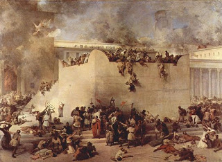

Gittin 56 - Destruction of Jerusalem
Bar Kamtza was invited to a feast by mistake and thrown out. He incited the Roman ruler to destroy Jerusalem. The dispatched general divined by bird flight and by arrows that Jerusalem will fall. He asked a child what he was learning, and the child said, "I will take revenge on Edom." The general understood that God wants to destroy Jerusalem but will then revenge on him, so he ran away, converted, and Rabbi Meir was his descendant.
In those times, if one bought a plot in Israel from an oppressor, he had to also pay ¼ to the owner.